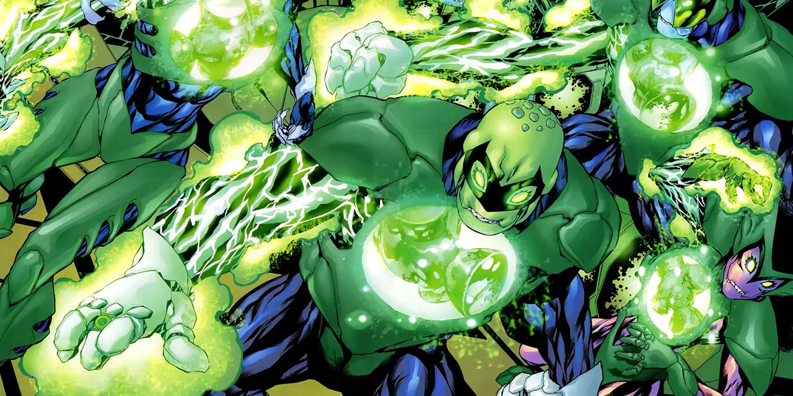

In-Universe History · 2008
The Alpha Lanterns Rise
The Guardians build enforcers to police their own Corps.

2008
The story
In the aftermath of the Sinestro Corps War, the Guardians rewrote the Book of Oa with ten new laws — including permission for Lanterns to use lethal force. But laws mean nothing without enforcers. So the Guardians built them: the Alpha Lanterns, cyborg hybrids of Lantern and Manhunter technology, emotionless and utterly loyal, tasked with policing the Corps itself.
The concept came from Grant Morrison; Geoff Johns and Mike McKone brought it to life in Green Lantern (vol. 4) #26 (Feb 2008). Five veteran Lanterns accepted the transformation — Boodikka, Chaselon, Green Man, Kraken, and Varix. John Stewart was offered a sixth slot and refused, uneasy about what the surgery would cost. He was right to hesitate: the Alpha Lanterns' first act was to stop a fellow Lantern from leaving Oa, and the Corps would never fully trust its own internal affairs division again.
The Alpha Lanterns embodied the Guardians' oldest flaw — the belief that order justifies any means. They were the Manhunters' spiritual successors, and like the Manhunters, they would eventually turn on their masters.
Green Lantern (2005) #26 — cropped main-cover artwork. Mike McKone (cover pencils); Andy Lanning (cover inks); Moose Baumann (cover colors). Artwork source & details.
Artwork credits (1 image)
Credits refer to the illustrations shown here. Open a record for sources, adaptations and unresolved details. Some artwork and source pages contain story spoilers.
- Alpha Lanterns — Green Lantern (2005) #26 — cropped main-cover artwork. Mike McKone (cover pencils); Andy Lanning (cover inks); Moose Baumann (cover colors).